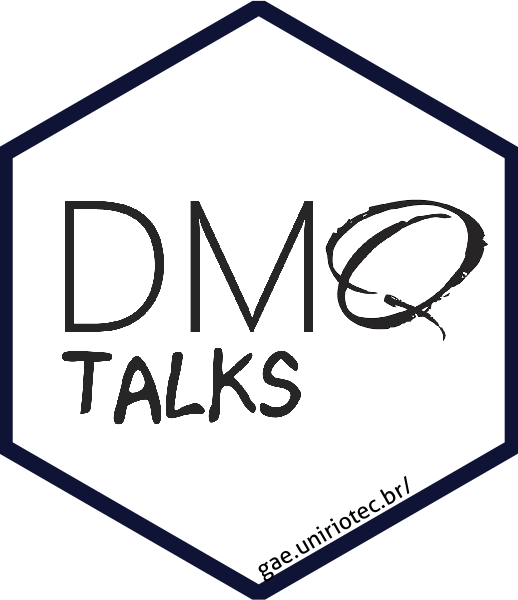

Alguns Resultados
Aqui você vai encontrar o link para o evento, a estimativa do número de pessoas síncronas e assíncronas (até 11/08).
Para entrar em contato, por favor, acesse o site do GAE
Para entrar em contato, por favor, acesse o site do GAE